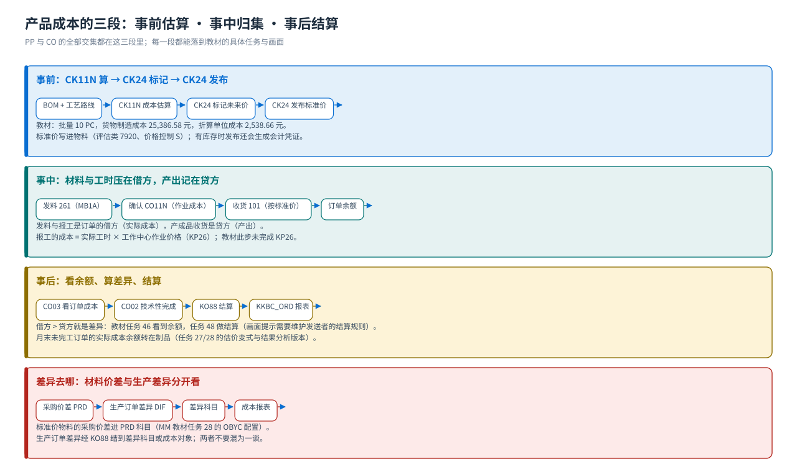
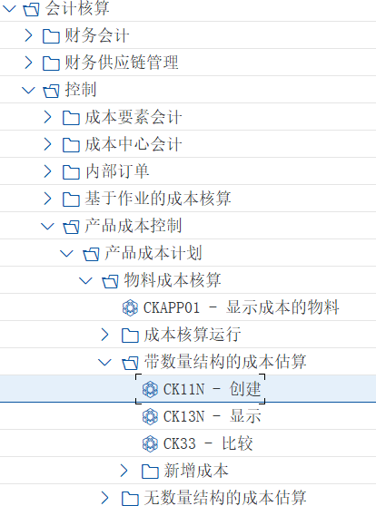
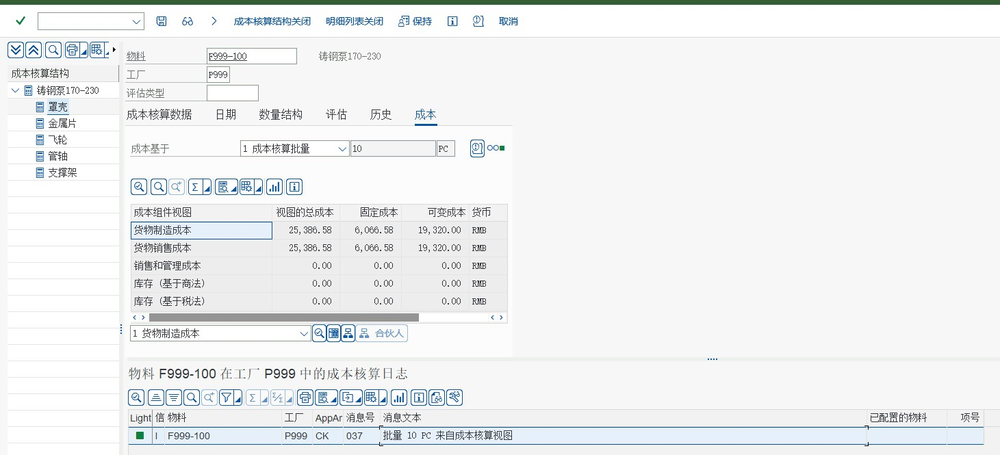
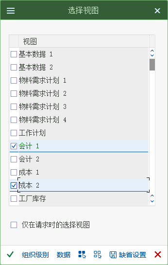
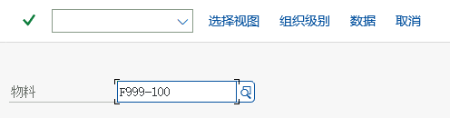
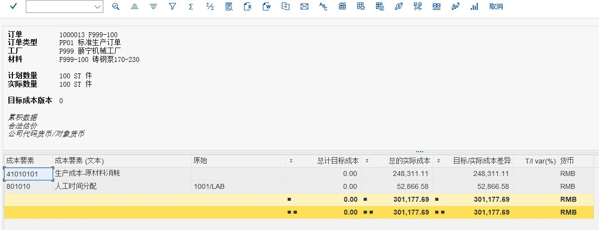

流程③ 成本
CK11N 标准成本 · CK24 标记与发布 · CO03 订单成本 · KO88 结算 · KKBC_ORD 报表
成本篇回答「这批货到底花了多少钱」：事前用 CK11N 按 BOM + 工艺路线算标准成本、用 CK24 标记并发布成物料的标准价格；事中把实际材料与工时压在订单借方、把产出贷在订单上；事后用 CO03 看余额、用 KO88 结算差异、用 KKBC_ORD 出报表。教材 PP 任务 17–28、46、48、49 是这一篇的现场。
教学场景
教材任务 17 的原话：产品成本是 PP 和 CO 最重要的集成。因为标准成本估算要吃两样主数据：BOM（材料成本）与工艺路线 + 工作中心（作业成本）。这也是为什么成本篇要放在主数据之后讲。
教材的成本核算批量是 10 PC，来自产成品主数据的成本视图 1；算出来的货物制造成本是 25,386.58 元，折算单位成本约 2,538.66 元 —— 这个数就是后面标记/发布的价格。
| 前置 | 内容 | 教材任务 |
|---|---|---|
| 主数据 | F999-100 的 BOM 与工艺路线（含工作中心与标准值） | 06–15 |
| 物料视图 | 产成品的生产计划视图 / 成本视图（成本核算批量 10 PC） | 16 |
| 成本核算配置 | 成本构成结构 Z1、估价变式、日期控制、数量结构控制 PC01、成本核算变式 | 17–21 |
| 作业价格 | CO 侧的作业类型价格 KP26（教材此处未完成，会影响到作业成本） | 12（卡点） |
{kind=link}

手顺① 新建产品成本估算（CK11N）
新建产品成本估算
CK11NCK11N 输入物料 F999-100、工厂 P999 与成本核算变式（教材用复制自 PPC1 的变式）、成本核算日期，回车得到成本明细：左边是组件结构，右边上部是各种视图的成本，下部是按项目明细的成本构成分析（可按工序看到成本累加）。解释：颐宁公司现在要根据产成品“铸钢泵 170-230”的 BOM 和工艺路线来技术更精确的产品成本，来取代原来在物料主数据中的估算的标准成本。
会计核算－控制－产品成本控制－产品成本计划－物料成本核算－带数量结构的成本核算－CK11N 创建
画面 1教材《S4.docx》· PP 任务 22 新建产品成本估算 · 原图 01_1_image916.png 
画面 2教材《S4.docx》· PP 任务 22 新建产品成本估算 · 原图 01_2_image917.png 
画面 3教材《S4.docx》· PP 任务 22 新建产品成本估算 · 原图 01_3_image918.jpeg 说明注意：核对你的成本计算结果是否和屏幕上的一致，并分析这个结果是怎么产生的，同时将这个结果写下来。解释：这就是该产成品的成本核算。屏幕左边是该产品的组件结构，右侧中部是不同视图的成本。我们主要使用的是“制造成本”。右侧下部是按项目明细的成本明细分析，我们可以看到按各道工序成本累加。我们可以通过相关菜单切换到成本构成分析。
成本核算批量 10PC 是从产成品主数据的成本视图 1 中传递过来的。点击保存出现
画面 4教材《S4.docx》· PP 任务 22 新建产品成本估算 · 原图 02_1_image921.jpeg 
画面 5教材《S4.docx》· PP 任务 22 新建产品成本估算 · 原图 03_1_image922.png 
画面 6教材《S4.docx》· PP 任务 22 新建产品成本估算 · 原图 03_2_image923.png
{kind=link}
{kind=link}
| 画面区域 | 看什么 | 教材值 / 说明 |
|---|---|---|
| 成本核算批量 | 这次算的数量 | 10 PC（来自物料成本视图 1） |
| 货物制造成本 | 材料 + 作业（人工/机器/准备）成本合计 | 25,386.58（固定 6,066.58 / 可变 19,320.00） |
| 货物销售成本 | 制造成本 + 销售与管理成本（教材此处与制造成本相同） | 25,386.58 |
| 组件结构（左侧） | BOM 组件：罩壳、金属片、飞轮、管轴、支撑架 | 教材任务 22 提示：核对成本结果与画面一致，并分析结果怎么来的 |
| 成本明细（下部） | 按成本构成/工序的行项目明细 | 可切换到成本构成分析 |
| 消息日志 | 「批量 10 PC 来自成本核算视图」等提示 | 画面下方的成本核算日志 |
手顺② 标记价格（CK24）
标记价格
CK24CK24 把上一步算出的成本估算「标记」成物料主数据里的未来价格（教材提示：此时价格已经更新）。按「允许发布」继续，保存后出现结果画面；教材还遇到「账本月被打开」的提示，点退回后 F8 继续。解释：这个步骤 SAP 称为“标记价格”，我们将把前面一个步骤的产成品价格估算“标记”成物料主数据中的“未来价格”

画面 7教材《S4.docx》· PP 任务 23 标记价格 · 原图 01_1_image926.png 点击允许发布

画面 8教材《S4.docx》· PP 任务 23 标记价格 · 原图 02_1_image927.png 
画面 9教材《S4.docx》· PP 任务 23 标记价格 · 原图 02_2_image928.png 
画面 10教材《S4.docx》· PP 任务 23 标记价格 · 原图 02_3_image931.png 点击保存后出现如下页面

画面 11教材《S4.docx》· PP 任务 23 标记价格 · 原图 03_1_image932.png 解释：颐宁公司的账本月被打开，点击退回，点击 F8,如下图，再按返回如下图

画面 12教材《S4.docx》· PP 任务 23 标记价格 · 原图 04_1_image933.png 画面 13教材《S4.docx》· PP 任务 23 标记价格 · 原图 04_2_image934.png 
画面 14教材《S4.docx》· PP 任务 23 标记价格 · 原图 04_3_image937.png 原书提示此时价格已经更新，
{kind=link}
| 动作 | 作用 | 注意 |
|---|---|---|
| 标记 Mark | 把成本估算里的价格写成未来（计划）价格 | 只影响未来期间，当前标准价不变 |
| 允许发布 Allow Price Release | 标记阶段的检查与勾选 | 教材任务 23 步骤 02 |
| 账本月被打开 | 会计期间状态导致后续动作需退回/F8 | 任务 23 步骤 04 的原书说明 |
| 结果画面 | 标记结果、日志与后续步骤入口 | 标记完成后才有资格做「发布」 |
手顺③ 发布价格（CK24）
发布价格
CK24解释：此步将未来价格发布，这样系统将更新产成品的标准成本。前台
会计－控制－产品成本控制－产品成本计划－物料成本核算－CK24-价格更新
画面 15教材《S4.docx》· PP 任务 25 发布价格 · 原图 01_1_image944.png 点击发布点击 F8

画面 16教材《S4.docx》· PP 任务 25 发布价格 · 原图 02_1_image945.png 原书提示此页面本来会显示标准价格 3072（本应该是 4440.32 检查）说明解释：如果该产成品有库存存在，系统还会自动生产会计凭证。颐宁公司在系统中现在还没有产成品库存，所以只是更新标准价格。
教材任务 25 的原书提示写「此页面本来会显示标准价格 3072（本应该是 4440.32），请检查」，任务 26 又写「应该标准价格会是 4440.32」；而教材画面上显示的是标记前标准价格 4,500.00、标记后计划价格与发布后标准价格都是 2,538.66（与 CK11N 的 25,386.58 ÷ 10 一致）。
教学建议：以画面的数值与计算逻辑为准（单位成本 = 总成本 ÷ 批量），把教材正文里的 3072 / 4440.32 当作版本差异；自己的系统上跑一遍，MM03 的「成本 2」视图里看「标准价格」这一行最可靠。
手顺④ 显示产成品已发布的计划价格（MM03）
显示产成品已发布的计划价格
MM03MM03 显示 F999-100，切到「成本 2」视图，在当期期间里看标准价格、在未来期间里看计划价格。解释：依然到产成品的物料主数据中去查看刚才价格发布的效果。后勤－物料管理－物料主数据－物料－显示－MM03-显示当前

画面 17教材《S4.docx》· PP 任务 26 显示产成品已发布的计划价格 · 原图 01_1_image946.png 
画面 18教材《S4.docx》· PP 任务 26 显示产成品已发布的计划价格 · 原图 01_2_image947.png 
画面 19教材《S4.docx》· PP 任务 26 显示产成品已发布的计划价格 · 原图 02_1_image950.png 
画面 20教材《S4.docx》· PP 任务 26 显示产成品已发布的计划价格 · 原图 03_1_image951.png 应该标准价格会是 4440.32（原因同前步骤）

画面 21教材《S4.docx》· PP 任务 26 显示产成品已发布的计划价格 · 原图 04_1_image952.png 原书提示点击当前，可以看到物料成本估算
画面 22教材《S4.docx》· PP 任务 26 显示产成品已发布的计划价格 · 原图 05_1_image953.png
{kind=link}
{kind=link}
| 字段 | 教材画面值 | 含义 |
|---|---|---|
| 计划价格 Planned Price | 2,538.66（未来期间 4/2021） | 标记进来的未来价格 |
| 标准价格 Standard Price | 2,538.66（发布后）/ 发布前画面为 4,500.00 | 当前用于评估存货与订单产出的价格 |
| 价格控制 | S | 标准价：差异进差异科目，不进存货价值 |
| 评估类 | 7920 | 产成品的存货科目分类（与工厂一起决定存货科目） |
| 移动平均价 / 货币 | 0.00 / RMB | 标准价物料不用移动平均价 |
手顺⑤ 显示生产订单的成本（CO03）
显示生产订单的成本
CO03CO03 打开生产订单，看它的成本。画面显示的是这张订单的计划成本、实际成本与余额（差异）——实际成本有余额就意味着投入高过产出，这就是任务 48 要结算的差异。
画面 23教材《S4.docx》· PP 任务 46 显示生产订单的成本 · 原图 01_1_image1059.png 
画面 24教材《S4.docx》· PP 任务 46 显示生产订单的成本 · 原图 02_1_image1060.png 
画面 25教材《S4.docx》· PP 任务 46 显示生产订单的成本 · 原图 02_2_image1061.jpeg
| 订单成本的三块 | 来源 | 教材画面 |
|---|---|---|
| 计划成本 Planned Costs | BOM 组件 + 工艺路线的作业需求量 × 价格 | 订单成本概览的计划列 |
| 实际成本 Actual Costs | 发料（261）的材料 + 确认带来的作业成本 | 任务 43/44 的动作累计出来的 |
| 产出 Credits | 产成品收货按标准价贷记 | 任务 45 的收货 |
| 余额 / 差异 Balance | 实际成本 − 产出 | 任务 46 看到的余额，任务 48 结算 |
手顺⑥ 生产订单差异结算（KO88）
生产订单差异结算
KO88KO88 单个处理，输入订单与期间，把生产订单的差异结算掉。教材画面里出现了「维护发送者的结算规则」这类提示 —— 说明结算规则（收件人、结算类型、科目）没维护好，这也是真实项目里最常见的卡点之一。解释：46 的时候我们发现该生产订单的实际成本中有余额，这就意味着投入高过产出，我们称之为生产订单的差异，从会计角度来讲，生产订单差异需要做结算。
会计－控制－产品成本控制－成本对象控制－按订单划分的产品成本－期末结算－单一功能－KO88 单个处理
画面 26教材《S4.docx》· PP 任务 48 生产订单差异结算 · 原图 01_1_image1066.png 
画面 27教材《S4.docx》· PP 任务 48 生产订单差异结算 · 原图 02_1_image1067.png
| 结算要素 | 含义 | 教材情况 |
|---|---|---|
| 结算规则 Settlement Rule | 订单成本往哪结：成本中心 / 差异科目 / 其他订单 | 教材 KO88 画面提示需要维护（任务 48） |
| 结算期间 Period | 按会计期间结算（教材画面 2021 年 4 月） | 与订单实际成本发生的期间一致 |
| 结算类型 / 结算凭证 | 结算会生成会计凭证，把差异转出订单 | 任务 48 的结果 |
| 在制品 WIP | 月末未完工订单的实际成本余额转作在制品（任务 28 的结果分析版本） | 任务 27/28 配了实际成本估价变式与结果分析版本 |
| 差异 DIF | 技术性完成后，余额即为差异，结到差异科目 | 任务 47 技术性完成 → 任务 48 结算 |
KO02），再指出差异科目属于 CO/FI 的后台配置。本项目里结算规则与在制品配置并不在 PP 的配置清单里，教材也明确把它们放在 CO 的期末结算路径下。手顺⑦ 生产订单成本报表显示（KKBC_ORD）
生产订单成本报表显示
KKBC_ORD）：它把订单的计划、实际、差异、在制品都摊在一张报表里，是月结时成本会计最常开的画面。会计－控制－产品成本控制－成本对象控制－按订单划分的产品成本－信息系统－按订单的产品成本报表－详细的报表－KKBC_ORD-用于订单

画面 28教材《S4.docx》· PP 任务 49 生产订单成本报表显示 · 原图 01_1_image1068.png 
画面 29教材《S4.docx》· PP 任务 49 生产订单成本报表显示 · 原图 01_2_image1069.jpeg 说明解释：这一步我们到信息系统中去查看生产订单的成本报表前台
{kind=link}
配置依赖：成本篇背后的 12 个任务
| 配置块 | 教材任务 | 干什么 |
|---|---|---|
| 成本构成结构 Z1 | 17 | 定义成本由哪些构成（材料 / 人工 / 机器 / 准备）、与成本要素的对应，并分配给工厂 |
| 成本核算变式组件 | 18–20 | 估价变式（001 物料计划、007 订单实际成本）、日期控制、数量结构控制 PC01 |
| 成本核算变式 | 21 | 把上面这些子变式组合成一个可用的成本核算变式（教材复制 PPC1 后修改） |
| 实际成本估价与结果分析 | 27–28 | 给生产订单实际成本分配估价变式；定义在制品结果分析版本 |
| 结算相关 | （CO 侧） | 结算规则与实际结算科目在 CO，教材 PP 里只演示了 KO88 的执行 |
- 成本核算的核心逻辑：数量结构（BOM + 工艺路线）→ 乘上价格（材料价格 + 作业价格）→ 汇总到成本构成（任务 17 的 Z1）。
- 估价变式 001 用于物料计划（任务 18 原书说明），007 用于订单实际成本；两者不要混。
- 成本核算变式在哪查：
OKKN（成本核算变式总览）；成本构成结构在OKTZ。 - 标准价物料的差异去处：MM 的采购价差（PRD）与生产订单差异（DIF）在 MM 教材任务 28 的 OBYC 里配。
教材未演示、但项目必用的成本功能
| 功能 | 解决什么问题 | T-code / 路径 |
|---|---|---|
| 结算规则维护（教材未演示，但任务 48 会暴露它缺失） | 订单成本往哪结（差异科目、成本中心、其他订单）；不维护就没有收件人，结算会报错 | KO02 → 抬头「结算规则」 |
| 在制品计算 / 差异计算（教材未演示） | 月末批量算在制品与差异，而不是一张张订单跑 KO88 | KKAO 在制品计算；KKS1 差异计算；KO88 则是单张结算 |
| 批量成本核算运行（教材未演示） | 成千上万个物料要算标准成本时，用一次运行跑完并批量标记/发布 | CK40N 成本核算运行 |
| 显示/比较成本估算（教材未演示） | 看清一份成本估算是哪一版、和上一版差在哪 | CK13N 显示估算；成本估算的比较功能 |
| 按期间的成本报表（教材未演示） | 跨订单、跨期间看成本与差异的趋势 | KKBC_ORD 单订单；S_ALR_87013127 等 CO 报表 |
常见错误与排查
| 症状 | 原因 | 处理 |
|---|---|---|
| CK11N 报「没有成本核算变式 / 没有找到数量结构」 | 成本核算变式未维护或 BOM/工艺路线缺失 | 查任务 21 的变式与任务 06/14 的主数据 |
| 成本里没有作业成本（人工/机器为 0） | 作业价格 KP26 未维护，或工序控制码不含成本 | 教材任务 12 就是这个卡点；请 CO 维护作业价格 |
| CK24 标记后 MM03 里未来价格没变 | 标记的期间与查看的期间不一致 | 在「成本 2」视图切换到未来期间看 |
| CK24 发布报「账本月已打开/期间问题」 | 会计期间状态与当前账期冲突 | 按提示退回重试；查 FI 的期间设置 |
| 订单收货后产出为 0 | 产成品没有标准价格（CK24 还没做） | 先做任务 23/25 更新标准价，再收货 |
| KO88 报「维护发送者的结算规则」 | 订单结算规则缺失（教材任务 48 的情况） | 维护订单结算规则（收件人/结算类型），再执行结算 |
| 订单成本与成本估算差很多 | 实际材料价格或工时与标准不一致（正常的差异来源） | 看 KKBC_ORD 的差异明细，分析是量差还是价差 |